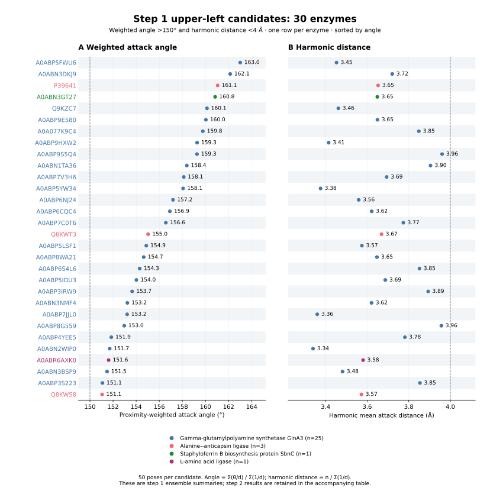

Step 1 proximity-weighted angle >150° and harmonic distance <4 Å. Rows are ordered by weighted angle.

PDF · PNG · All selected candidates and step 2 metrics
| accession | family | reaction | step1_weighted_angle_deg | step1_plot_harmonic_distance_A | step1_near_attack_fraction | step2_near_attack_fraction |
|---|---|---|---|---|---|---|
| A0ABP5FWU6 | Gamma-glutamylpolyamine synthetase GlnA3 | rxn05123 | 163.008 | 3.452 | 0.860 | 0.000 |
| A0ABN3DKJ9 | Gamma-glutamylpolyamine synthetase GlnA3 | rxn05123 | 162.140 | 3.720 | 0.680 | 0.100 |
| P39641 | Alanine--anticapsin ligase | rxn09897 | 161.051 | 3.652 | 0.900 | 0.000 |
| A0ABN3GT27 | Staphyloferrin B biosynthesis protein SbnC | rxn42395 | 160.838 | 3.649 | 0.800 | 0.000 |
| Q9KZC7 | Gamma-glutamylpolyamine synthetase GlnA3 | target_substrate_query | 160.131 | 3.461 | 0.820 | 0.120 |
| A0ABP9E580 | Gamma-glutamylpolyamine synthetase GlnA3 | rxn05123 | 160.038 | 3.649 | 0.620 | 0.060 |
| A0A077K9C4 | Gamma-glutamylpolyamine synthetase GlnA3 | rxn05123 | 159.773 | 3.849 | 0.480 | 0.720 |
| A0ABP9HXW2 | Gamma-glutamylpolyamine synthetase GlnA3 | rxn05123 | 159.274 | 3.414 | 0.760 | 0.080 |
| A0ABP9S5Q4 | Gamma-glutamylpolyamine synthetase GlnA3 | rxn05123 | 159.266 | 3.960 | 0.560 | 0.240 |
| A0ABN1TA36 | Gamma-glutamylpolyamine synthetase GlnA3 | rxn05123 | 158.386 | 3.905 | 0.740 | 0.500 |
| A0ABP7V3H6 | Gamma-glutamylpolyamine synthetase GlnA3 | rxn05123 | 158.123 | 3.694 | 0.560 | 0.680 |
| A0ABP5YW34 | Gamma-glutamylpolyamine synthetase GlnA3 | rxn05123 | 158.064 | 3.376 | 0.860 | 0.300 |
| A0ABP6NJ24 | Gamma-glutamylpolyamine synthetase GlnA3 | rxn05123 | 157.192 | 3.559 | 0.680 | 0.500 |
| A0ABP6CQC4 | Gamma-glutamylpolyamine synthetase GlnA3 | rxn05123 | 156.916 | 3.622 | 0.800 | 0.040 |
| A0ABP7C0T6 | Gamma-glutamylpolyamine synthetase GlnA3 | rxn05123 | 156.569 | 3.774 | 0.440 | 0.120 |
| Q8KWT3 | Alanine--anticapsin ligase | rxn09897 | 155.036 | 3.669 | 0.800 | 0.000 |
| A0ABP5LSF1 | Gamma-glutamylpolyamine synthetase GlnA3 | rxn05123 | 154.875 | 3.575 | 0.600 | 0.180 |
| A0ABP8WA21 | Gamma-glutamylpolyamine synthetase GlnA3 | rxn05123 | 154.652 | 3.647 | 0.680 | 0.340 |
| A0ABP6S4L6 | Gamma-glutamylpolyamine synthetase GlnA3 | rxn05123 | 154.303 | 3.851 | 0.400 | 0.280 |
| A0ABP5IDU3 | Gamma-glutamylpolyamine synthetase GlnA3 | rxn05123 | 154.021 | 3.687 | 0.460 | 0.160 |
| A0ABP3IRW9 | Gamma-glutamylpolyamine synthetase GlnA3 | rxn05123 | 153.651 | 3.893 | 0.600 | 0.240 |
| A0ABN3NMF4 | Gamma-glutamylpolyamine synthetase GlnA3 | rxn05123 | 153.241 | 3.621 | 0.500 | 0.080 |
| A0ABP7JJL0 | Gamma-glutamylpolyamine synthetase GlnA3 | rxn05123 | 153.219 | 3.360 | 0.660 | 0.280 |
| A0ABP8G559 | Gamma-glutamylpolyamine synthetase GlnA3 | rxn05123 | 152.970 | 3.957 | 0.400 | 0.140 |
| A0ABP4YEE5 | Gamma-glutamylpolyamine synthetase GlnA3 | rxn05123 | 151.850 | 3.781 | 0.560 | 0.200 |
| A0ABN2WIP0 | Gamma-glutamylpolyamine synthetase GlnA3 | rxn05123 | 151.713 | 3.339 | 0.660 | 0.060 |
| A0ABR6AXK0 | L-amino acid ligase | rxn09897 | 151.618 | 3.580 | 0.580 | 0.040 |
| A0ABN3BSP9 | Gamma-glutamylpolyamine synthetase GlnA3 | rxn05123 | 151.482 | 3.482 | 0.480 | 0.120 |
| A0ABP3S223 | Gamma-glutamylpolyamine synthetase GlnA3 | rxn05123 | 151.080 | 3.854 | 0.520 | 0.540 |
| Q8KWS8 | Alanine--anticapsin ligase | rxn09897 | 151.052 | 3.572 | 0.560 | 0.000 |
Near-attack fractions use distance <4 Å and angle >150° for step 1, and distance <3.5 Å and angle 90–120° for pocket-valid step 2 poses. Ensemble means do not establish individual-pose occupancy or enzyme activity.